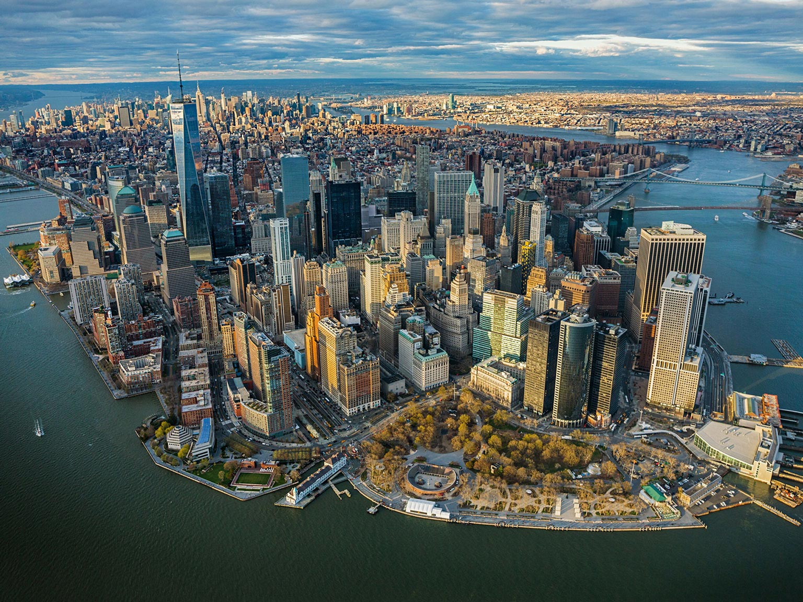

<div>
<!-- *****************************************************************************************************************
	 ABOUT ME
	 ***************************************************************************************************************** -->

	 <div class="container mtb">
	 	<div class="row">
	 		<div class="col-lg-6">
	 			
	 		</div>
	 		
	 		<div class="col-lg-6">
	 			<h4>Big Apple!</h4>
	 			<p>Cold and dirty. That were my impressions about New York at the first look. And I was tired. Around 20 some hours flight and stop, I needed to take a shower, 
	 			change my pants, and lay myself on a real bed for a good and long sleep. But before all that, I need a puff. And get in side Brooklyn from JFK somehow. All I have 
	 			with me were a luggage, and hiking backpack, and enough mouney for me to survive the first two weeks. I have only two weeks to make everything straight before semester 
	 			stards. That means I need to find a place relatively safe and not that expansive. Rent it, move in. Buy some basic furniture. Know the area. Get a cell phone. Get
	 			internet in wherever I rent. Get a debit card from any American bank. And a bunch of ober trivial or not that trivial things done.</p>
	 			<p>Lesson learned? If you are a Chinese, do NOT do any serious business with Chinese buniness man in New York. You are guanteed to be tread on. If you want to rent 
	 			a place in New York, go to jews. And be friend with people and shops around. Laundry shops, restaurants, creepy stores, mafia ran cafe, etc. Be a nice guy. You will 
	 			be alright. Trust me. But don't be a soft guy. New Yorkers don't give a fuck about anything. You fail, you fail. No one will rescue you. You succeed, you succeed. As 
	 			long as you don't get in the of others, no one gives a fuck about who you are, what you do, where you from.</p>
	 		</div>
	 	</div>
	 	<div class="row">
	 		<p>You might wondering why it was such 
	 		a rush that I had only that little time to set things right. Well, to my luck, I received my offer 2 months prior to class starts. And getting a visa is not a quick 
	 		thing. Unlike many American citizen who could go to a lot of places and get the visa after they arrive. We need to do a long process. Apply for it on line, then go to 
	 		the American embassy for an interview, then you may be granted a visa. That takes time. Plus an international flight is not cheap. And I am not a rich kid. But any 
	 		way, I am here finally.</p>
	 		<p>It was a tight break in a huge snow storm when I arrived New York. I had been on that trip for like over 20 hours. I was tired. Got a yellow cab, rush to a cheap or 
	 		not so cheap hostel in brooklyn I booked a weed ago, I can finally have a good and sound sleep. The next few days were busy. But with luck, I got a studio in southern 
	 		brooklyn at a good price. It was a pre-war building. So, a tiny but comfortable one as I am the only people living in that studio. And the area is good. It was an over 
	 		30 years old jewish community. South to that is a quite the same age slavian community. That means, safe. Come on, jews pay good tax, then cops are there to protect. 
	 		And nobody want to fuck russians around right? Unless you are stupid or just straight out stupid, you will get you shit beatten out if you fuck up with a Brat!</p>
	 		<p>MTA, I love but hate MTA. If you live around Manhattan, you love it. Metro is the only good enough way to get you wherever you want to be on time in NYC. But if you 
	 		live farther in Queens, Brooklyn, it sucks. Late nigh, weekands, be prepared for station skip, lane maintainance, and no service. My campus was in downtown Brooklyn. Not 
	 		a good place to be late in night. But you know, as a grad student you have no choice. There are times you have to stay there late for all things. So, after 8 months, I 
	 		moved to Rooveselt island. A tiny island right in the middle in East river, between Manhattan and Queens. A nice place. Probably the only place in New York you won't be 
	 		bother by never ending sirens and late night stupid car races. I got me myself some great roomates. A fellow engineer student, a crazy beautiful girl, and an artist. 
	 		A year later, it became two artists and another hot girl. We were like a family you know. And I treat them and that place as my family. They treat me and that place 
	 		as the family as well. How lucky am I!
	 		</p>
	 		<p>Grad school is not easy. I was doing Computer Engineering. Considering I have an Applied Physics background, I do had quite a lot to catch up with. But it was fun. 
	 		Learn new stuff and learn it deep. Meet interesting people from my home country and India. Yep, you saw it right, these two places. So far I had met only a handful of 
	 		American citizens at school. And that is the reason I feel disgusted and became sarcastic whenever I hear people say H1B and F1 guy robbed Americans their hi-tech job. 
	 		You got that huge a market yet really not many Americans are interested in learning and got trained in this industry! And people blame us? Man!</p>
	 		<p>New York is great. And two years there, I became a New Yorker. How to know if someone is a New Yorker or not? Simple. If he/she got easily pissed about anything, 
	 		interested in anything no related to him/her, this is NOT a New Yorker. New Yorker don't give no shit about anything. If you don't have a thing to do with me, my money, 
	 		my life, I don't give nothing about you at all. If you bother me somehow, fuch off. That's New Yorker. Do I like it? Yes and no. It feels cold, but it saves a lot of 
	 		time, money and effort. And that is very valuable. Especially if you are in New York.
	 		</p>
	 	</div><! --/row -->
	 </div><! --/container -->
</div>
</div>
